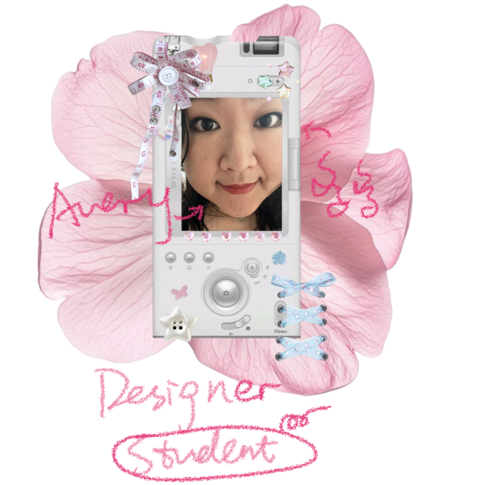

A — About Me
About Me
Creative Technologist / Visual Designer / Artist
Hello,
I'm Avery :D

Hi there! Welcome to my little corner of the web!
I'm a visual designer who loves exploring the possibilities between art and creative technology. I graduated with honors from Parsons School of Design, The New School, in May 2026, with a BFA in Design and Technology (Creative Technology track).
I enjoy creating playful, expressive, and emotionally engaging visual experiences. From web design and digital collage to interactive storytelling, I love bringing ideas to life through different mediums. I hope my work does more than catch someone's eye. I want it to spark curiosity and invite people to explore a little further.
01 / CREATIVE PRACTICE
My Art
Making the Familiar Strange
I'm drawn to bold colors, surrealism, digital collage, and the endless possibilities of mixed media. I love bringing unexpected images, textures, and visual elements together, turning familiar things into something a little strange and playful.
My inspiration often comes from small observations in everyday life, personal experiences, and connections between cultures. A reflection on identity, or even the subtle color changes in a breakfast I make every day, can become the starting point for a new project.
Rather than simply documenting these experiences, I enjoy taking them apart, rearranging them, and giving them new visual languages and rules. Sometimes this becomes a surreal collage; other times, an interactive world with its own logic.
For me, making art is about experimenting with unexpected combinations and discovering new possibilities in seemingly ordinary things.
02 / DESIGN PRACTICE
My Design
Designing Within Constraints
While art allows me to invent and explore rules, design challenges me to find new possibilities within existing constraints. What does a brand want to communicate? What does the audience need to understand? What can the platform actually support? I enjoy working through these questions to find solutions that are both creative and practical.
Through my work on LUMO Entertainment's website, I've become increasingly interested in how visitors navigate and understand digital spaces. What catches their attention first? How can information be organized more clearly? How does the experience change between desktop and mobile? By working with information architecture, visual hierarchy, typography, and responsive layouts, I aim to create websites that are intuitive while preserving each brand's personality.
Lately, I've been especially interested in motion and interaction design. Beyond making a page feel more alive, what else can animation do? Can it guide attention, provide feedback, or make navigation feel more natural?
I enjoy thinking about the purpose behind each design decision and finding a balance between creative expression, user experience, and technical limitations.
Beyond the Screen
An Avery outside the screen.
Even when I'm not designing, I still love looking at design.
I often find myself browsing Pinterest, RedNote, and Instagram for visual inspiration, from graphic design and photography to wonderfully strange creative experiments. I love figuring out what makes a visual stand out, noticing interesting uses of color, typography, and composition, and discovering techniques I haven't tried before.
Outside of that, I enjoy exploring shops, wandering around the city, and taking walks with my headphones on. Sometimes, simply observing the streets, storefronts, and everyday life around me helps me notice little details I might otherwise overlook.